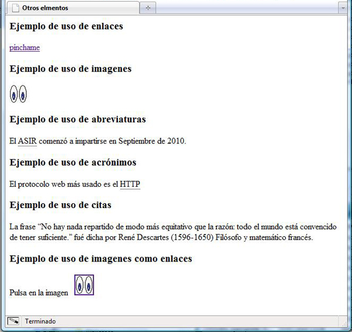
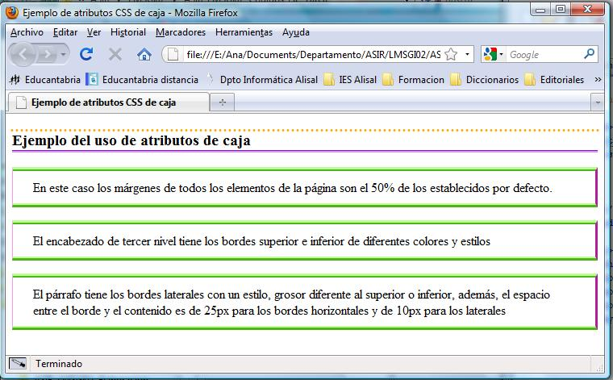

LMSGI01.- Intercambio de información en la Web.
LMSGI01.- Intercambio de información en la Web.
Una de las tareas básicas que hacen los ordenadores es almacenar la información para poder ser procesada posteriormente. Esta información puede ser de muchos tipos diferentes (texto, imágenes, vídeos, música ...) pero lo realmente importante será cómo la almacena el ordenador para poder tratarla posteriormente de manera eficiente.
En el pasado, con los ordenadores centrales la información se generaba y se procesaba en el mismo lugar. Pero la aparición de los ordenadores personales, la eclosión de las redes y, sobre todo, el éxito de Internet, ha creado toda una serie de problemáticas que hasta el momento no existían: los datos generados en un lugar ahora pueden ser consumidas en un lugar totalmente diferente, como:
- en sistemas operativos totalmente diferentes.
- en máquinas que pueden funcionar de maneras muy diversas.
Por tanto, en un sistema informático moderno se debe tener en cuenta esta posibilidad a la hora de almacenar y sobre todo transmitir datos.
En la actualidad son miles los servicios y aplicaciones que comparten información y de no ser por algunos estándares creados para representaciones de datos esta tarea sería un verdadero infierno. XML, CSV, JSON o YAML son algunos de esos formatos de intercambio de información.

1.- Lenguajes de marcas.
Un "lenguaje de marcas" es un modo de codificar un documento donde, junto con el texto, se incorporan etiquetas, marcas o anotaciones con información adicional relativa a la estructura del texto o su formato de presentación. Permiten hacer explícita la estructura de un documento, su contenido semántico o cualquier otra información lingüística o extralingüística que se quiera hacer patente.
El lenguaje de marcas más extendido es el HTML (HyperText Markup Language, lenguaje de marcado de hipertexto), fundamento del World Wide Web (entramado de comunicación de alcance mundial). Sin embargo, históricamente el marcado comenzó a usarse en la industria editorial y de la comunicación para definir el formato de de los textos.
Algunos procesadores de texto optaron por guardar toda la información como texto, haciendo que las indicaciones de formato (tamaño de la página, color, tipografía, márgenes, etc.) también se almacenen de forma textual. Dichas indicaciones son caracteres marcados de manera especial para que así un programa adecuado pueda traducir dichos caracteres no como texto sino como operaciones que finalmente producirán mostrar el texto del documento de forma adecuada.
La idea del marcado procede del inglés "marking up" término con el que se referían a la técnica de marcar manuscritos con lápiz de color para hacer anotaciones como por ejemplo la tipografía a emplear en las imprentas. Este mismo término se ha utilizado para los documentos de texto que contienen comandos u anotaciones y que han dado lugar a lenguajes llamados lenguajes de marcas, lenguajes de marcado o lenguajes de etiquetas.
Ejemplo
Aspecto de un documento realizado con un lenguaje de marcas:
<carta>
<fecha>22/11/2015</fecha>
<presentacion>Estimado cliente:</presentacion>
<contenido>bla bla bla bla …</contenido>
<firma>Don Jose Gutiérrez González</firma>
</carta>
Autoevaluación
1.1.- Etiquetas o Marcas
Los lenguajes de marcas utilizan una serie de etiquetas especiales o marcas intercaladas en un documento de texto sin formato. Dichas etiquetas serán posteriormente interpretadas por los intérpretes del lenguaje y ayudan al procesado del documento.
Las marcas son una serie de códigos que se incorporan a los documentos electrónicos para determinar el formato, la forma en que se han de imprimir, la estructura de los datos, etc. Por lo tanto, son anotaciones que se incorporan a los datos pero que no forman parte .
Las marcas, por tanto, deben ser fácilmente distinguibles del texto normal (por su posición, porque siguen algún tipo de sintaxis, etc.). Las marcas más usadas son las que están formadas por textos descriptivos y están rodeadas de los símbolos de "menor que" (<) y "mayor que" (>) y, normalmente, se utilizan dos etiquetas: una de inicio y otra de fin para indicar que ha terminado el efecto que queríamos presentar. La única diferencia entre ambas es que la de cierre lleva una barra inclinada "/" antes del código.
<etiqueta>texto que sufrirá las consecuencias de la etiqueta</etiqueta>
Ejemplo
<u>Esto está subrayado</u>
Al interpretarlo en un navegador se verá así:
Esto está subrayado
Autoevaluación
1.2.- Características de los lenguajes de marcas
Entre las características más interesantes que ofrecen los lenguajes de marcas se encuentran:
Que se basan en el texto plano.
Los lenguajes de marcas se basan en texto plano sin formato. Estos caracteres pueden estar codificados en diferentes códigos de caracteres: ASCII , ISO-8859-1, UTF-8, etc.
Una de las ventajas que intentan aportar los lenguajes de marcas es que se pueden interpretar directamente independientemente de la plataforma, del sistema operativo o del programa que se use.
El hecho de que estén basados en formato de texto hace que sean fáciles de crear y modificar. Sólo requieren un simple editor de textos.
Que permiten utilizar metadatos.
En general, un grupo de metadatos se refiere a un grupo de datos que describen el contenido informativo de un objeto al que se denomina recurso. En este caso, las marcas son la forma en que se añaden los metadatos a los documentos de texto y cómo se consiguen superar las limitaciones del formato de texto.
Las marcas se intercalan entre el contenido del documento, por lo que generalmente estas etiquetas suelen ser descriptivos de qué es lo que indica el contenido de los datos que contienen.
Que son fáciles de interpretar y procesar.
Las diferentes etiquetas con distintos significados, permiten que posteriormente un programa pueda interpretar que es lo que debe hacer con cada uno de los datos del documento.
Que son fáciles de crear y suficientemente flexibles para representar datos muy diversos.
A pesar de que fueron pensados para contener datos de texto, los lenguajes de marcas han demostrado que son capaces de contener datos de muchos tipos diferentes.
Actualmente se están utilizando archivos de marcas para representar imágenes vectoriales, fórmulas matemáticas, crear páginas web, ejecutar funciones remotas mediante servicios web, representar música o sonidos, etc.
Y sin importar qué tipo de datos se representen siempre habrá la posibilidad de crear estos archivos desde un editor de texto básico.
1.3.- Ejemplos de lenguajes de marcas.
Algunos ejemplos de lenguajes de marcas son:
- RTF: El formato de Texto Enriquecido (Rich Text Format) es un formato de archivo informático desarrollado por Microsoft en 1987 para el intercambio de documentos multiplataforma. La mayoría de los procesadores de texto pueden leer y escribir documentos RTF.
- HTML: El lenguaje de marcas de hipertexto (Hypertext Markup Language) hace referencia al lenguaje de marcado para la elaboración de páginas web.
- RSS: Son las siglas de Really Simple Syndication (en español, sindicación realmente simple), un formato XML para distribuir contenido en la web. Se utiliza para difundir información actualizada frecuentemente a usuarios que se han suscrito a la fuente de contenidos.
- MathML: Mathematical Markup Language es un lenguaje de marcado basado en XML, cuyo objetivo es expresar notación matemática de forma que distintas máquinas puedan entenderla, para su uso en combinación con XHTML en páginas web, y para intercambio de información entre programas de tipo matemático en general.
- SVG: Gráficos vectoriales escalables, o gráficos vectoriales redimensionables (del inglés Scalable Vector Graphics) es un formato de gráficos vectoriales bidimensionales, tanto estáticos como animados, en formato XML, cuya especificación es un estándar abierto desarrollado por el W3C desde 1999.
- MusicXML: Es un formato abierto de notación musical basado en XML. Fue diseñado para el intercambio de partituras, particularmente entre diferentes editores de partituras.
1.4.- Herramientas básicas.
Para trabajar con lenguajes de marcas es necesario editar los documentos y luego procesarlos, por tanto tenemos dos tipos de herramientas:
Editores
Una característica de los lenguajes de marcas es que se basan en la utilización de ficheros de texto plano por lo que basta utilizar un procesador de texto normal y corriente para construir un documento. Desde editores tan simples como el Bloc de notas de los sistemas Windows o Gedit de sistemas Unix hasta editores más complejos como el Microsoft Word, pasando por editores especializados en XML como el Oxygen XML Editor.
Procesadores
Para interpretar el código se puede utilizar cualquier navegador. Un procesador es un conjunto de módulos de software que comprueba que el documento cumple las normas establecidas para que pueda abrirse.
El el caso de las páginas HTML, el procesador sería el navegador que interpreta las etiquetas HTML y muestra el documento de manera adecuada.
Autoevaluación
1.5.- Evolución de los lenguajes de marcas.
Se considera que el origen de los lenguajes de marcas está en las modificaciones que los impresores hacían con lápiz en manuscritos. Cuando alguien quería imprimir un libro que había escrito, los impresores, con un lápiz generalmente de color azul, escribían en el texto qué características debía tener cada parte del texto, si se tenía que hacer en negrita, si era el título del libro , etc. Se cree que estos son los antecedentes de las marcas.
En los años 70 con el desarrollo de los editores y procesadores de texto surgen los primeros lenguajes informáticos especializados en tareas de descripción y estructuración de información: los lenguajes de marcas.
Este marcado estaba exclusivamente orientado a la presentación de la información, aunque pronto se percataron de las posibilidades del marcado y le dieron nuevos usos que resolvían una gran variedad de necesidades, apareció el formato generalizado.
1.5.1.- SGML.
Uno de los problemas que se conocen desde hace décadas en la informática es la falta de estandarización en los formatos de información usados por los distintos programas.
Para resolver este problema, en los años sesenta IBM encargó a Charles F. Goldfab la construcción de un sistema de edición, almacenamiento y búsqueda de documentos legales. Tras analizar el funcionamiento de la empresa llegaron a la conclusión de que para realizar un buen procesado informático de los documentos había que establecer un formato estándar para todos los documentos que se manejaban en la empresa. Con ello se lograba gestionar cualquier documento en cualquier departamento y con cualquier aplicación, sin tener en cuenta dónde ni con qué se generó el documento. Dicho formato tenía que ser válido para los distintos tipos de documentos legales que utilizaba la empresa, por tanto, debía ser flexible para que se pudiera ajustar a las distintas situaciones.
El formato de documentos que se creó como resultado de este trabajo fue GML (Generalized Markup Language), cuyo objetivo era describir los documentos de tal modo que el resultado fuese independiente de la plataforma y la aplicación utilizada.
El formato GML evolucionó hasta que en 1986 dio lugar al estándar ISO 8879 que se denominó SGML (Standard Generalized Markup Language). Éste era un lenguaje muy complejo y requería de unas herramientas de software caras. Por ello su uso ha quedado relegado a grandes aplicaciones industriales.
1.5.2.- HTML.
En 1991, parecía que los editores WYSIWYG que almacenan los documentos en formatos binarios propietarios abarcarían casi la totalidad del procesamiento de textos, relegando al SGML a usos profesionales o industriales muy específicos. Sin embargo, la situación cambió drásticamente cuando Sir Tim Berners-Lee, que había aprendido SGML utilizó la sintaxis SGML para crear el HTML.
HTML es una versión simplificada de SGML, ya que sólo se utilizaban las instrucciones absolutamente imprescindibles. Además, era tan fácil de comprender que rápidamente tuvo gran aceptación logrando lo que no pudo SGML. HTML se convirtió en un estándar general para la creación de páginas web y su sencillez ha sido uno de los factores que ha llevado a la rápida popularidad del World Wide Web. El HTML es hoy día el tipo de documento más empleado en el mundo.
Cualquier persona podía escribir documentos en este formato, sin apenas necesidad de conocimientos de informática. Esta fue una de las razones de su éxito, pero también condujo a un cierto caos. El crecimiento exponencial de la web en los años 90 produjo documentos en cantidades ingentes pero mal estructurados, problema agravado aún más por la falta de respeto por los estándares, por parte de diseñadores web y fabricantes de software.
1.5.3.- XML.
La respuesta a los problemas surgidos en torno al HTML vino de la mano del XML (eXtensible Markup Language). XML es un metalenguaje de etiquetas desarrollado por el World Wide Web Consortium (W3C) o Consorcio WWW, organización dedicada a la estandarización de casi todas las tecnologías ligadas a la web.
XML no es un lenguaje en el sentido de que no define un conjunto de etiquetas. XML es un metalenguaje porque permite crear lenguajes. Así, XML proporciona una serie de reglas para que cualquiera pueda definir su propio conjunto de etiquetas y atributos y pueda definir las relaciones que existen entre esas etiquetas.
Por lo tanto, tanto GML como SGML y XML, son metalenguajes. Los tres permiten crear lenguajes. Como hemos visto, SGML está inspirado por GML y a su vez, XML está inspirado por SGML.
Por otro lado, HTML, XHTML, MathML, RSS, SVG y otros más, sí que son lenguajes. HTML está basado en las reglas de SGML, mientras que los otros lenguajes que he nombrado están basados en XML.
2.- HTML5.
HTML (Hyper Text Markup Language) es el lenguaje utilizado para crear páginas web. Es un estándar reconocido en todos los navegadores, por lo tanto, todos ellos visualizan una página HTML de forma muy similar independientemente del sistema operativo sobre el que se ejecutan. Los navegadores no muestran las etiquetas HTML, pero las utilizan para procesar el contenido de la página
HTML5, HyperText Markup Language, versión 5, es la quinta revisión importante del lenguaje básico de la World Wide Web, HTML.
HTML5 especifica dos variantes de sintaxis para HTML: una clásica, HTML (text/html), conocida como HTML5, y una variante XHTML conocida como sintaxis XHTML5 que deberá servirse con sintaxis XML (application/xhtml+xml). Esta es la primera vez que HTML y XHTML se han desarrollado en paralelo. La versión definitiva de la quinta revisión del estándar se publicó en octubre de 2014.
El desarrollo de este lenguaje de marcado es regulado por el Consorcio W3C.
Debes conocer
Como XHTML es una variante de HTML y como éste fue el estándar original de la Web, suele decirse que todas las páginas están escritas en HTML. Al emplearse de este modo, el término, en realidad, suele referirse a cualquier versión de HTML o XHTML.
Ejercicio práctico
Prueba la compatibilidad de los principales navegadores con las etiquetas HTML5 en el siguiente enlace:
2.1.- Evolución y versiones.
El origen de HTML fue un sistema de hipertexto para compartir documentos electrónicos en 1980. La primera propuesta oficial para convertir HTML en un estándar se realizó en 1993 y la última versión completada (4.01) se formalizó a fines de 1999.
El lenguaje HTML tenía una sintaxis muy permisiva, por lo que era posible escribir sus etiquetas y atributos de muchas formas diferentes. Las etiquetas, por ejemplo, podían escribirse en mayúsculas, en minúsculas e incluso combinando mayúsculas y minúsculas. El valor de los atributos de las etiquetas se pueden indicar con o sin comillas. Además, el orden en el que se abrían y cerraban las etiquetas no era importante.
Esta flexibilidad dio lugar a páginas con un código desordenado, difícil de mantener y muy poco profesional. Para evitar estos problemas se crea el lenguaje XHTML que combina la sintaxis de HTML con la de XML.
La versión de XHTML usada actualmente es la 1.0 o menos habitual la 1.1. Se debían haber sustituido ambas por un estándar incluso más reciente denominado XHTML 2. No obstante, los desarrolladores de XHTML 2 se perdieron en el intento y cuando un grupo de la competencia comenzó a presentar las versiones iniciales de un estándar denominado HTML5, fue el golpe final.
De hecho, la W3C abandonó sus trabajos con el estándar XHTML 2 y apostó por formalizar HTML5, convirtiéndolo en el estándar oficial y en el futuro de la Web.
HTML5 acepta todo lo que admite XHTML, sin necesidad de cambios, mientras que la sintaxis de XHTML es más estricta. Por ello, HTML5 acoge determinadas prácticas que XHTML no acepta haciéndolo más potente.
Autoevaluación
Solución
2.2.- Estructura de un documento HTML.
Generalmente, la estructura de una página web en HTML5 suele seguir un patrón similar.
<!DOCTYPE html>
<html lang="es">
<head>
<meta charset="utf-8">
<meta name="description" content="Ejemplo de HTML5">
<meta name="keywords" content="HTML5, CSS3, JavaScript">
<title>Primera Página HTML5</title>
</ head>
<body>
<h1>Esto es HTML5</h1>
<p>Aquí vemos el contenido de la página web.</p>
</body>
</html>
Aunque en la especificación HTML5 se ha hecho un gran esfuerzo para relajar la sintaxis y por ello, las etiquetas <html>, <head>y <body> no son obligatorias, es del todo recomendable que estén.
Veamos algunos de los apartados que se pueden definir en una página web:
1. El tipo de documento: la primera línea de un documento HTML se corresponde con la declaración del tipo de documento, el doctype, y sirve para indicar también qué versión de HTML se ha utilizado, de manera que el navegador pueda interpretarlo correctamente.
<!-- Declaración del doctype en HTML5 -->
<! DOCTYPE html>
<!-- Declaración del doctype en HTML4.01 transicional -->
<! DOCTYPE HTML PUBLIC "- // W3C // DTD HTML 4.01 Transitional // EN" "http://www.w3.org/TR/html4/loose.dtd">
<!-- Declaración del doctype en XHTML 1.0 estricto -->
<! DOCTYPE html PUBLIC "- // W3C // DTD XHTML 1.0 Strict // EN" "http://www.w3.org/TR/xhtml1/DTD/xhtml1-strict.dtd">
2. El documento HTML: el elemento html indica el principio del contenido de la página HTML y se indica también el lenguaje utilizado.
<!-- Sintaxis en HTML5. -->
<html lang="es">
3. A continuación, como se puede apreciar en el ejemplo anterior, el documento se diferencia en dos bloques: head y body.
- En el head está la información adicional de la página web, como puede ser el título que se visualiza en la pestaña del navegador a través del elemento <title> o los elementos <meta>.
- En el body por su parte, está el contenido que se visualiza de la página web, el cual puede estar formado por multitud de elementos html que estructuran el documento.
4. La codificación de caracteres: suele indicar qué codificación de caracteres se ha utilizado en una página web. Habitualmente será UTF-8.
<!-- Sintaxis en HTML5 -->
<meta charset="utf-8">
5. Se puede agregar otras etiquetas <meta> como description o keywords para definir otros aspectos de la página web como por ejemplo:
<meta name="description” content=”Ejemplo de HTML5”>
<meta name="keywords" content=”HTML5, CSS3, Javascript”>
Debes conocer
Recuerda que los comentarios de HTML5 se ponen entre los caracteres <!-- y -->.
<!-- En la siguiente línea definimos un párrafo -->
2.2.1.- Codificación de caracteres.
El castellano es un lenguaje que por suerte o por desgracia posee caracteres especiales tales como tildes, ñ, diéresis (ü)...
Esto en HTML es un problema, ya que necesitamos códigos especiales, denominados entidades HTML, para visualizarlos correctamente.
Algunos de esos caracteres especiales son las vocales con tilde pero existen más. Puedes consultar la tabla completa aquí:
á => á
é => é
í => í
ó => ó
ñ = ñ
Una forma de "estandarizar" la visualización de este tipo de caracteres sin tener que escribir constantemente las entidades HTML que las definen, es utilizar una codificación de caracteres. Al declarar una codificación en nuestra página web estamos, por decirlo de alguna manera, diciéndole al navegador cómo debe interpretar esos caracteres especiales que componen el texto; por lo que internamente el navegador hará las sustituciones de los caracteres especiales por las entidades HTML correspondientes de forma automática. De esta manera, podemos escribir con total normalidad en nuestro documento HTML sin preocuparnos de las tildes, interrogaciones y demás caracteres especiales del lenguaje.
Para utilizar una codificación en HTML5 basta con incluir la etiqueta mostrada a continuación en la cabecera de nuestro documento HTML, entre las etiquetas <head> y </head>.
<meta charset="UTF-8">
Es importante tener la misma codificación en el editor de código que la indicada en el charset del HTML. Es decir, nuestro editor de código debe guardar los ficheros con la misma codificación con la que será interpretado nuestro HTML, de lo contrario no se entenderán entre sí y mostrará símbolos raros.
Utilizaremos el charset que más se adapte a nuestras necesidades, ya que no es lo mismo una página en Español (de España) que una en inglés o una internacional (aunque esté redactada en Español).
Si queremos tener una web "universal" y legible por todos, sean de donde sean. UTF-8 es el sistema de codificación más extendido y con más soporte a lo largo y ancho del mundo.
2.3.- Etiquetas y atributos básicos.
Un documento HTML está formado por etiquetas y atributos.
Al igual que en XML las etiquetas pueden ser de apertura, <etiqueta>, o de cierre, </etiqueta> y definen los diferentes elementos con los que podemos trabajar. Una de las diferencias con XML es que la cantidad de etiquetas de HTML está limitada a aquellas que están definidas por el lenguaje.
La definición completa de ciertos elementos, como las imágenes y los enlaces, requiere información adicional que se añade a las etiquetas mediante los atributos.
En general sus características son:
- Todos los elementos HTML pueden tener atributos
- Los atributos proporcionan información adicional sobre un elemento
- Los atributos siempre se especifican en la etiqueta de inicio
- Los atributos normalmente vienen en pares nombre/valor como: name = "value"
- Para cada uno de los atributos hay definido un conjunto de valores que se le puede asignar. Si el valor de un atributo no es válido, el navegador lo ignora.
- Cada una de las etiquetas HTML define los atributos que puede utilizar, aunque algunos de ellos son comunes a muchas etiquetas.
Por ejemplo, el idioma del documento se puede declarar en la etiqueta <html> utilizando el atributo lang. La declaración de un idioma es importante para las aplicaciones de accesibilidad (lectores de pantalla) y los motores de búsqueda:
<!DOCTYPE html> <html lang="es"> ... </html>
Autoevaluación
Solución
Autoevaluación
2.3.1.- Elementos que dan formato al texto de un párrafo.
Los distintos elementos que podemos utilizar para dar formato a nuestro texto son:
| Elemento | Descripción |
|---|---|
| p | Delimita los párrafos |
| hi | Encabezado de nivel i, donde i es un número entero entre 1 y 6, ambos inclusive. El tamaño de la letra del encabezado es mayor cuanto menor sea el valor de i. No deben de usarse estas etiquetas para formatear texto. Sólo estarán bien usadas para designar títulos de párrafos. |
| br | Define un salto de línea sin iniciar un nuevo párrafo. La etiqueta <br> es una etiqueta vacía, lo que significa que no tiene etiqueta de final. |
| b | Indica que el texto que está en ese elemento se le pondrá en negrita. |
| i | Indica que el texto que está en ese elemento se le pondrá en itálica ó cursiva. |
| u | Indica que el texto que está en ese elemento se le pondrá subrayado. |
| sup | Indica que el texto que está en ese elemento es un supraíndice. |
| sub | Indica que el texto que está en ese elemento es un subíndice. |
| strong | Indica que el texto que está en ese elemento estará resaltado. Habitualmente los navegadores resaltan el texto poniéndolo en negrita aunque podría haber algún navegador que resaltase el texto poniéndolo en cursiva y en naranja. |
Autoevaluación
2.3.1.1.- Ejemplo.
Un ejemplo de un documento HTML que utiliza estos elementos es:
<!DOCTYPE HTML PUBLIC "-//W3C//DTD HTML 4.0 transitional//EN" "http://www.w3.org/TR/REC-html40/loose.dtd">
<html>
<head>
<title>Elementos de formato de párrafo</title>
</head>
<body>
<h1>Este es un encabezado de nivel 1.</h1>
<h6>Pero éste otro es de nivel 6</h6>
<p>Ahora voy a definir un párrafo. Dentro del que pondremos texto en <b>negrita</b>,
<i>cursiva</i>, <u>subrayada</u> e incluso <b><u>negrita y subrayada</u></b> simultaneamente y
<b><i><u>negrita, cursiva y subrayada.</u></i></b> mediante el anidamiento de etiquetas.
Además vamos a mostrar el uso de <sub>subíndices</sub> y de <sup>supraíndices</sup>,
así como <strong>texto resaltado, que no es negrita</strong>
</p>
</body>
</html>
2.3.2.- Elementos de listas.
Hay tres tipos de listas: ordenadas, desordenadas y listas de definición.
| Elemento | Descripción |
|---|---|
| ul | Delimita los elementos que forman una lista desordenada |
| ol | Delimita los elementos que forman una lista ordenada |
| li | Indica cada uno de los elementos de una lista |
| dl | Delimita los elementos que forman una lista de definición |
| dt | Cada uno de los términos que se definen de una lista de definición. |
| dd | Cada una de las definiciones de una lista de definición. |
2.3.2.1.- Ejemplo.
Un ejemplo de un documento HTML que muestra la forma de utilizar estos elementos es:
<!DOCTYPE HTML PUBLIC "-//W3C//DTD HTML 4.0 transitional//EN" "http://www.w3.org/TR/REC-html40/loose.dtd">
<html>
<head>
<title>Listas</title>
</head>
<body>
<h3>Ejemplo de lista desordenada: Módulos de 1º de ASIR</h3>
<ul>
<li>Fundamentos de Hardware</li>
<li>Gestión de Bases de Datos</li>
</ul>
<h3>Ejemplo de lista ordenada: Módulos de 1º de ASIR</h3>
<ol>
<li>Fundamentos de Hardware</li>
<li>Gestión de Bases de Datos</li>
</ol>
<h3>Ejemplo de lista de definición: Módulos de 1º de ASIR</h3>
<dl>
<dt>Fundamentos de Hardware</dt>
<dd>Componentes físicos de un ordenador</dd>
<dt>Gestión de Bases de Datos</dt>
<dd>Diseño y uso de bases de datos relacionales</dd>
</dl>
</body>
</html>
2.3.3.- Enlaces.
Los enlaces se encuentran en casi todas las páginas web. Los enlaces permiten a los usuarios hacer clic en su camino de una página a otra. Los enlaces HTML son hipervínculos. Un enlace no tiene que ser texto. Puede ser una imagen, un documento o cualquier otro elemento HTML.
En HTML, los vínculos se definen con la etiqueta <a> :
<a href="https://www.birt.eus">Visita nuestra página web</a>El atributo href especifica la dirección de destino del enlace.
El atributo target especifica dónde abrir el documento vinculado y pude tener los siguientes valores:
- _blank - Abre el documento vinculado en una nueva ventana o pestaña
- _self - Abre el documento vinculado en la misma ventana / pestaña que se hizo clic (esto es el predeterminado)
- _parent - Abre el documento vinculado en el marco padre
- _top - Abre el documento vinculado en todo el cuerpo de la ventana
- framename - Abre el documento vinculado en un marco con nombre
Por ejemplo, este enlace se abrirá en una página nueva:
<a href="https://www.birt.eus" target="_blank">Visita nuestra página web</a>Reflexiona
Podemos utilizar enlaces utilizando imágenes, ¿cuál sería el código HTML para crear enlaces a imágenes?
2.3.4.- Imágenes y otros elementos
Las imágenes se definen con la etiqueta <img> . La etiqueta <img> está vacía y no tiene etiqueta de cierre.
El atributo src especifica la URL (dirección web) de la imagen.
El atributo alt proporciona un texto alternativo para una imagen, si por alguna razón el usuario no puede verla (debido a una conexión lenta, un error en el atributo src, ...) se mostrará el valor del atributo alt.
<img src="html5.gif" alt="HTML5 Icon" width="128" height="128"><img src="html5.gif" alt="HTML5 Icon" width="128" height="128">
En HTML4.01 se puede utilizar los atributos width y height (en píxeles). En HTML5 utilizaremos la etiqueta style.
Otros elementos que podemos utilizar son:
| Elemento | Descripción |
|---|---|
| abbr | Indica una forma abreviada. |
| blockquote | Contiene un bloque de texto con sangría. |
| q | Contiene una cita por lo que el navegador le añade las marcas de citación |
Ejercicio resuelto
¿Cuál podría ser el código HTML asociado al documento que se muestra en la imagen?

2.3.5.- Elementos multimedia.
Para insertar contenido multimedia en nuestros documentos HTML usaremos las etiquetas video y audio de la siguiente manera:
<!-- Reproduce un vídeo de ejemplo con los controles de reproducción -->
<video src="http://v2v.cc/~j/theora_testsuite/320x240.ogg" controls>
Tu navegador no implementa el elemento <code>video</code>.
</video>
<!-- insertar audio en tu documento HTML -->
<audio src="/test/audio.ogg" controls autoplay loop>
<p>Tu navegador no implementa el elemento audio.</p>
</audio>
El atributo src puede ser una URL del archivo de audio o la ruta al archivo en el sistema local. Además, puede usar atributos como:
- controls: muestra los controles estándar de HTML5.
- autoplay: hace que el contenido se reproduzca automáticamente.
- loop: hace que el audio se repita automáticamente.
- preload: es usado para almacenar temporalmente (buffering) archivos de gran tamaño. Puede tomar los valores "none" (no almacena temporalmente el archivo), "auto" (almacena temporalmente el archivo multimedia) o "metadata" (almacena temporalmente sólo los metadatos del archivo).
La etiqueta <video> puede hacer uso de la etiqueta <source> en su interior con el propósito de suministrar vídeos en formatos alternativos, lo que resulta una mayor adaptabilidad a navegadores obsoletos. De este modo, los navegadores que admiten los nuevos formatos podrán hacer uso de estos recursos, mientras que aquellos que no lo hagan recurrirán a los formatos más antiguos o a las etiquetas de respaldo.
Los tipos de formato utilizados se denominan codec, el codec es un tipo de fichero que permite comprimir y descomprimir video digital. Los formatos o codec soportado por HTML5, se pueden encontrar en el siguiente enlace. En el apartado de "Definition and Usage" se visualiza la compatibilidad con los navegadores más comunes.
<video width="640" height="480">
<source src="video.mp4" type="video/mp4" />
<source src="video.webm" type="video/webm" />
<source src="video.ogv" type="video/ogg" />
<img src="imagennovideo.png" alt="No soporta el vídeo" />
Su navegador no es compatible con los videos elegidos
</video>A continuación se muestra, la interpretación que realiza el código al abrirlo con el navegador.
- Intenta reproducir el primer formato:
MP4. Si el navegador no reconoce el codec o no encuentra el fichero saltará a la siguiente etiqueta source,. - Intenta reproducir el segundo formato:
WEBM. Si el navegador no reconoce el codec o no encuentra el fichero saltará a la siguiente etiqueta source,. - Intenta reproducir el tercer formato:
OGV. Si el navegador no reconoce el codec o no encuentra el fichero saltará a la siguiente etiqueta source,. - Si todas las reproducciones anteriores han fallado, intentará mostrar una imagen.
- Si se trata de un navegador de terminal de texto (o sin capacidades gráficas), mostrará el texto del final.
Fuentes:
2.3.6.- Tablas.
Los elementos para definir una tabla son los siguientes:
| Elemento | Descripción |
|---|---|
| table | Delimita el contenido de una tabla. |
| caption | Para agregar un título a una tabla. Debe insertarse inmediatamente después de la etiqueta <table>. |
| tr | Delimita cada una de las líneas de la tabla. |
| td | Delimita el contenido de cada celda de la tabla. |
| th | Delimita cada una de las celdas de la cabecera |
| colspan (Atributo de <td> y <th>) | Para hacer que una celda cubra más de una columna |
| rowspan (Atributo de <td>) y <th> | Para hacer un intervalo de celda más de una fila. |
Los elementos <td> son los contenedores de datos de la tabla. Pueden contener todo tipo de elementos HTML; texto, imágenes, listas, otras tablas, etc.
2.3.6.1.- Ejemplo.
Un ejemplo de un documento HTML que muestra el modo de utilizar algunos de estos elementos es:
<!DOCTYPE html>
<html>
<head>
<title>Tablas</title>
</head>
<body>
<h3>Ejemplo de tablas en HTML </h3>
<table>
<tr>
<th>Nombre</th>
<th>Apellido</th>
<th>Edad</th>
</tr>
<tr>
<td>Maria</td>
<td>Agirre</td>
<td>50</td>
</tr>
<tr>
<td>Martin</td>
<td>Aranburu</td>
<td>94</td>
</tr>
</table>
</body>
</html>2.3.6.2.- Ejemplo colspan.
Utilizando los atributos colspan y rowspan podemos agrupar las celdas y/o filas.
- Ejemplo con colspan:
<!DOCTYPE html>
<html>
<head>
<title>Tablas 2</title>
</head>
<body>
<h2>Juntar dos columnas con colspan:</h2>
<table>
<tr>
<th>Nombre</th>
<th colspan="2">Teléfono</th>
</tr>
<tr>
<td>Maria Agirre</td>
<td>987377854</td>
<td>653577855</td>
</tr>
</table>
</body>
</html>
2.3.6.3.- Ejemplo rowspan.
- Ejemplo con rowspan:
<!DOCTYPE html>
<html>
<head>
<title>Tablas 3</title>
</head>
<body>
<h2>Juntar dos filas con rowspan:</h2>
<table>
<caption> Título de la tabla </caption>
<tr>
<th>Nombre:</th>
<td>Amaia Agirre</td>
</tr>
<tr>
<th rowspan="2">Teléfono:</th>
<td>944377854</td>
</tr>
<tr>
<td>675577855</td>
</tr>
</table>
</body>
</html>2.4.- HTML5 vs XHTML5.
HTML5 permite a los desarrolladores codificar de manera muy flexible: no hace falta cerrar las etiquetas, se pueden omitir algunas, los atributos no deben escribirse entre comillas... De echo, el siguiente código sería válido:
<!DOCTYPE HTML>
<meta charset=utf-8>
<title>HTML5 válido</title>
<p>Página web</p>
Sin <head>, sin <body>, pero sería un documento HTML5 válido.
Si queremos que el código HTML5 sea más estricto y cumpla con la sintaxis XML, lo que realmente estamos usando es XHTML5. Podemos decir que HTML5 tiene dos modos de análisis o sintaxis: HTML y XML. Es decir, HTML5 y XHTML5 usan el mismo vocabulario pero sintaxis diferentes.
También podéis encontrar referencias a HTML5 políglota. Este es un HTML5 que se ha escrito para ajustarse tanto a las especificaciones HTML como XHTML. Por tanto, un documento políglota se puede analizar, ya sea como HTML o XML , y producirá el mismo resultado.
Los requisitos mínimos para que un documento HTML5 cumpla con XML son:
- Usa el doctype HTML5
- El código está bien formado según la sintaxis XHTML
- Incluye el espacio de nombres XHTML por defecto: <html xmlns="http://www.w3.org/1999/xhtml">
- El servidor Web debe transmitir el documento como tipo MIME "application/xhtml+xml" para que el navegador lo interprete como XML.
Lo habitual es utilizar HTML5 pero siguiendo una guía de estilo o de buenas prácticas basadas en XHTML5.
Autoevaluación
2.4.1.- Guía de estilo.
Otras recomendaciones para un documento HTML5 bien formado son y que en su mayoría deriban del estandar XHTML son:
- Utilizar letras minúsculas para etiquetas y atributos.
- Todos los elementos deben tener una etiqueta de inicio y otra de finalización.
- Los valores de los atributos deben estar entre comillas.
- Evitar cerrar los elementos vacíos, aunque esté permitido.
- ...
A continuación, se describen con más detalle.
2.4.1.1.- Usar nombres de elementos y atributos en minúsculas.
HTML5 permite mezclar letras mayúsculas y minúsculas en nombres de elementos pero es mejor utilizar nombres de elementos en minúsculas porque:
- No es bueno mezclar mayúsculas y minúsculas
- Los desarrolladores normalmente usan nombres en minúsculas (como en XHTML)
- Las minúsculas son más fáciles de escribir
| BIEN | mal | muy mal |
|
|
|
También permite mezclar letras mayúsculas y minúsculas en los nombres de atributos pero es mejor usar nombres de atributo en minúscula porque:
- No es bueno mezclar mayúsculas y minúsculas
- Los desarrolladores normalmente usan nombres en minúsculas (como en XHTML)
- Las minúsculas son más fáciles de escribir
| BIEN | mal |
|
|
2.4.1.2.- Cerrar etiquetas.
En HTML5, no es obligatorio cerrar todos los elementos (por ejemplo, el elemento <p>), pero es mejor cerrar todos los elementos HTML.
BIEN
mal
<section>
<p>Esto es un párrafo.</p>
<p>Esto es otro párrafo.</p>
</section>
<section>
<p>Esto es un párrafo.
<p>Esto es otro párrafo.
</section>
Lo mismo ocurre con los elementos vacíos pero evitaremos usar la barra inclinada de cierre (/). Su uso es obligatorio en XHTML y XML.
Permitido:
<meta charset="utf-8">No recomendado:
<meta charset="utf-8" />2.4.1.3.- Entrecomillar atributos.
HTML5 permite valores de atributo sin comillas pero es mejor usarlos porque:
- Los desarrolladores normalmente usan comillas para valores de atributo (como en XHTML)
- Los valores entrecomillados son más fáciles de leer
- Se deben usar comillas si el valor contiene espacios
| BIEN | mal | muy mal |
|
|
|
2.4.1.4.- Atributos de la imagen.
Este atributo es importante cuando no se puede mostrar la imagen por algún motivo. Hay que añadir siempre el atributo alt a las imágenes. Además, siempre define el ancho y la altura de la imagen. Reduce el parpadeo porque el navegador puede reservar espacio para la imagen antes de cargarla.
| BIEN | mal |
|
|
2.4.1.5.- Legibilidad y comentarios.
HTML5 permite espacios alrededor del signo igual pero sin espacio es más fácil de leer.
| BIEN | mal |
|
|
Cuando se utiliza un editor de HTML, es un inconveniente desplazarse hacia la derecha y hacia la izquierda para leer el código HTML. Lo mejor es tratar de evitar las líneas de código de más de 80 caracteres.
No hay que agregar líneas en blanco sin una razón. Para facilitar la lectura, se pueden agregar líneas en blanco para separar bloques de código grandes o lógicos.
Hay que agregar dos espacios de sangría y no hay que utilizar la tecla de tabulación. No es necesario sangrar cada elemento:
| Ejemplo de tabla: |
Ejemplo de lista: |
|
|
Los comentarios cortos deben escribirse en una línea:
<!-- Esto es un comentario -->
Los comentarios que abarcan más de una línea, deben escribirse así:
<!--
Esto es un comentario largo. Esto es un comentario largo.
Esto es un comentario largo. Esto es un comentario largo.
-->
Los comentarios largos son más fáciles de ver si tienen dos espacios con sangría.
2.4.1.6.- Metadatos.
El elemento <title> es requerido en HTML5. El título debe ser lo más significativo posible y para garantizar una interpretación correcta y una correcta indexación del motor de búsqueda, tanto el idioma como la codificación de caracteres deben definirse lo antes posible en un documento:
<!DOCTYPE html>
<html lang="es-ES">
<head>
<meta charset="UTF-8">
<title>HTML5 estilo gida</title>
</head>HTML5 introdujo un método para permitir que los diseñadores web tomen el control de la ventana gráfica, a través de la etiqueta <meta>.
La ventana gráfica es el área visible del usuario de una página web. Varía con el dispositivo y será más pequeño en un teléfono móvil que en una pantalla de ordenador y con el elemento de vista le da instrucciones al navegador sobre cómo controlar las dimensiones y la escala de la página..
Hay que incluir el siguiente elemento de ventana gráfica en todas las páginas web:
<meta name="viewport" content="width=device-width, initial-scale=1.0">
La parte "width=device-width" establece el ancho de la página para seguir el ancho de pantalla del dispositivo (que variará dependiendo del dispositivo).
La parte de "initial-scale=1.0" establece el nivel de zoom inicial cuando el navegador carga la página por primera vez.
2.4.2.- Validar el código.
Al publicar una página web puede ser interesante comprobar si el código HTML empleado valida correctamente, es decir si no contiene errores.
De encontrarlos es necesario corregirlos para asegurar que nuestras páginas respeten las especificaciones y por lo tanto funcionen y se muestren correctamente en el navegador de cualquier dispositivo.
Algunos de estos errores pueden ser fatales para el posicionamiento de nuestro sitio web en internet.
Esto es independiente del software empleado para crear las páginas.
Para comprobar y validar el código empleado hay disponibles varios servicios online así como programas para la PC, incluso algunos editores de forma adicional comprueban la validez del código creado. No obstante la mejor solución es usar el servicio online del W3C, por la autoridad que posee y estar actualizado regularmente de acuerdo a las ultimas especificaciones y cambios hechos.
Para ello, hay que acceder al servicio del Validador HTML del W3C usando el siguiente vínculo: http://validator.w3.org/
Hay tres formas de usar el servicio:
- Introducir la dirección de la página en internet que queremos validar.
- Indicar la ruta a una página en nuestro equipo que aún no está disponible en internet.
- Pegar directamente el código HTML a comprobar.
Para saber más
Puedes leer el siguiente artículo:
Como validar y comprobar el código HTML y CSS de las páginas web
3.- Hojas de estilo CSS3.

Las hojas de estilos en cascada o CSS (Cascading Style Sheets) son un conjunto de reglas usadas para definir la presentación de un documento escrito en HTML. Le indican al navegador cómo se debe visualizar el contenido de la página web. El organismo encargado de regular su especificación es el World Wide Web Consortium (W3C).
Antes del uso de CSS, los diseñadores de páginas web debían definir el aspecto de cada elemento dentro de las etiquetas HTML utilizando atributos. CSS permite a los desarrolladores Web controlar el estilo y el formato de múltiples etiquetas y páginas Web al mismo tiempo.
Al crear una página web, se utiliza en primer lugar el lenguaje HTML/XHTML para marcar los contenidos, es decir, para designar la función de cada elemento dentro de la página: párrafo, cabecera, texto destacado, etc. Una vez creados los contenidos, se utiliza el lenguaje CSS para definir el formato de cada elemento.
Las ventajas que ofrece la utilización de hojas de estilo son:
- Separar la estructura de las páginas y su contenido (en HTML), del formato del texto y de la página (en CSS).
- Ampliar las posibilidades de formato y de presentación de una página web.
- Unificar el diseño de páginas web definiéndolo una sola vez y aplicándolo tantas veces como se quiera.
- Reutilizar las mismos hojas de estilo para diferentes documentos HTML.
En 1995, el W3C añadió a su grupo de trabajo de HTML el desarrollo y estandarización de CSS y en 1996 se publicó la primera recomendación oficial. El estándar actual es CSS3 y es totalmente compatible con las versiones anteriores.
La especificación de HTML5 fue desarrollada considerando CSS a cargo del diseño. Es por esto que HTML5 va unido a CSS3 aunque se trate de dos tecnologías completamente separadas.
Autoevaluación
3.1.- Sintaxis de las reglas de estilo.
 Cada uno de los estilos que componen una hoja de estilos CSS se denomina regla. Cada regla se forma por:
Cada uno de los estilos que componen una hoja de estilos CSS se denomina regla. Cada regla se forma por:
- Selector: indica el elemento o elementos HTML a los que se aplica la regla CSS
- Llave de apertura, {
- Declaración: especifica los estilos que se aplican a los elementos.
- Propiedad: permite modificar el aspecto de un atributo del elemento.
- Valor: indica el nuevo valor del atributo modificado en el elemento.
- Llave de cierre, }.
Ejemplo:
p {
color : blue;
text-align: center;
}En este caso el selector es "p", la declaración es: "color : blue" y, dentro de ésta, podemos diferenciar la propiedad "color" y el valor "blue".
Un documento HTML puede contener muchas reglas CSS. Cada regla puede contener varios selectores y cada declaración puede estar formada por diferentes propiedades.
Autoevaluación
3.2.- Cómo incluir estilos.
 Existen tres opciones para incluir estilos en una página web:
Existen tres opciones para incluir estilos en una página web:
1.- Incluir estilos en los elementos HTML
En esta opción se aplica un estilo único a una sola etiqueta o elemento HTML y para ello, se usa el atributo "style".
Este método es el menos utilizado, ya que para modificar un formato hay que cambiar todos los elementos que estén asociados a él. Solamente se utiliza en determinadas situaciones en las que se debe incluir un estilo muy específico para un solo elemento concreto.
2.- Incluir estilos en el documento HTML
Este métido se usa para definir un estilo para una sola página HTML y se define en la sección <head> con la etiqueta <style>.
Este método se emplea cuando se definen pocos estilos o cuando se quieren incluir estilos específicos en una determinada página HTML que completen los estilos globales de todas las páginas del sitio web. Tiene el inconveniente de que para modificar los estilos definidos, es necesario modificar todas las páginas que incluyen el estilo que se va a cambiar.
3.- Definir estilos en un archivo externo
En este caso, todos los estilos CSS se incluyen en uno, o varios, archivos de texto plano, cuya extensión es .css. Las páginas HTML enlazan dentro de su cabecera dicho fichero.
Puesto que una página web puede tener asociados varios ficheros CSS es recomendable agrupar estos últimos en un directorio. El navegador descarga los archivos CSS externos, además de la página web asociada a ellos, y aplica los estilos a los contenidos de la página antes de mostrar sus contenidos.
Esta es la forma de incluir CSS en las páginas HTML más utilizada. La principal ventaja es que se puede incluir un mismo archivo CSS en multitud de páginas HTML, por lo que se garantiza la aplicación homogénea de los mismos estilos a todas las páginas que forman un sitio web. Además, el mantenimiento del sitio web se simplifica al máximo, ya que el cambio en un solo archivo CSS permite variar de forma instantánea los estilos de todas las páginas HTML asociadas.
Autoevaluación
3.2.1.- Incluir estilos en los elementos HTML.
Un ejemplo de un documento HTML en el que se utiliza este método para incluir formatos es:
<!DOCTYPE html>
<head>
<title>Ejemplo de estilos CSS en el propio fichero</title>
</head>
<body>
<h3 style="color: green;">Ejemplo del uso de estilos CSS en el propio fichero</h3>
<p style="color: orange; font-family: Verdana;">En esta ocasión el párrafo de texto aparece de color naranja y
el encabezado h3 aparece en verde, mientras que en los ejemplos
vistos hasta ahora el color de la letra era negro.</p>
</body>
</html> Al publicarlo, en un navegador veríamos:

3.2.2.- Definir estilos en el documento HTML.
En este caso los formatos de los elementos se definen en la cabecera del documento HTML, dentro del elemento <style>.
Un ejemplo de un documento HTML en el que se utiliza este método para incluir formatos es:
<!DOCTYPE html>
<html>
<head>
<title>Ejemplo del uso de estilos CSS en la cabecera del propio documento</title>
<style type="text/css">
h3 { color: green;}
p { color: orange; font-family: Verdana; }
</style>
</head>
<body>
<h3>Ejemplo del uso de estilos CSS en la cabecera del propio documento</h3>
<p>En esta ocasión el párrafo de texto aparece de color naranja y
el encabezado h3 aparece en verde, mientras que en los ejemplos vistos hasta ahora el color de la letra era negro.</p>
</body>
</html>Al publicarlo, en un navegador veríamos:
3.2.3.- Definir estilos en un archivo externo enlazado.
Para realizar una página web usando un archivo CSS externo, se deben seguir los tres pasos siguientes:
- Se crea un archivo de texto plano con las definiciones de los formatos.
- Dicho archivo de texto se guarda con extensión .css
Un ejemplo podría ser el archivo formatos.css siguiente:
h3 { color: green;}
p { color: orange; font-family: Verdana; }A continuación, debemos enlazar el archivo CSS externo mediante la etiqueta <link> en la cabecera de la página web. El elemento <link> puede tener definidos cuatro atributos cuando se enlaza un archivo CSS:
- rel: indica el tipo de relación que tiene el archivo enlazado y la página HTML. Para los archivos CSS, siempre se utiliza el valor "stylesheet"
- type: indica el tipo de recurso enlazado. Para los archivos CSS su valor siempre es "text/css"
- href: indica la URL del archivo CSS que contiene los estilos. Puede ser relativa o absoluta y puede referenciar a un recurso interno o externo al sitio web.
- media: indica el medio en el que se van a aplicar los estilos del archivo CSS.
Un ejemplo de cómo enlazar el fichero formatos.css sería:
<!DOCTYPE html>
<html>
<head>
<title>Ejemplo de estilos CSS en fichero externo enlazado</title>
<link rel="stylesheet" href="formatos.css" >
</head>
<body>
<h3>Ejemplo del uso de estilos CSS en fichero externo enlazado</h3>
<p>En esta ocasión el párrafo de texto aparece de color naranja y
el encabezado h3 aparece en verde, mientras que en los ejemplos vistos hasta ahora el color de la letra era negro.</p>
</body>
</html> Al publicarlo, en un navegador veríamos:

3.3.- Atributos principales.
En los siguientes subapartados vamos a ver los atributos principales que se usan en CSS como son:
- Atributos de color y fondo.
- Atributos de texto.
- Atributos de fuente.
- Atributos de caja.
Si quieres saber más, aquí tenéis una página resumen de las propiedades CSS3 ordenadas por funcionalidad. Son muchas pero casi siempre existirá alguna que nos permita hacer lo que queremos. Así que pregunta a Google y busca ese efecto que te interesa y descrube cómo se lleva a cabo.
Debes conocer
Hay múltiples atributos o propiedades que se pueden definir con CSS . Para conocer el amplio abanico que ofrece CSS se pueden consultar la web de Developer Mozilla.
Dado que el estándar CSS3 está en continua evolución, no todos los navegadores han adoptado algunas de las propiedades, o si lo han hecho, muchas veces necesitan un prefijo. Estos prefijos son:
- -moz- Prefijo para el navegador Firefox.
- -ms- Prefijo para el navegador de Microsoft.
- -webkit- Prefijo para los navegadores Chrome y Safari.
- -o- Prefijo para el navegador Opera.
Sin embargo, no todos los navegadores se comportan de la misma manera ante la misma hoja de estilo, y esto se debe a que algunos no cumplen los estándares establecidos. Por ello se puede recurrir a las siguientes páginas para ver si determinadas características ya han sido implementadas, y por qué navegadores.
3.3.1.- Color y fondo.
Los atributos de color y fondo son los que enumeramos a continuación:
| Elemento | Descripción | Ejemplo |
|---|---|---|
| color | Indica el color del texto. Lo admiten casi todas las etiquetas de HTML. El valor de este atributo es un color, con su nombre o su valor RGB. HTML soportanombres de colores. |
|
| border | Cambia el color de los bordes. |
|
| background-color | Indica el color de fondo del elemento. El valor de este atributo es un color, con su nombre o su valor RGB. |
|
| background-image | Permite colocar una imagen de fondo del elemento. El valor que toma es el nombre de la imagen con su camino relativo o absoluto |
|
| background-repeat | Indica si ha de repetirse la imagen de fondo y, en ese caso, si debe ser horizontal o verticalmente. Los valores que puede tomar son: repeat-x, repeat-y o no-repeat. |
|
| background-attachment | Especifica si la imagen ha de permanecer fija o realizar un scroll. Los valores que pueden tomar son: scroll o fixed. |
|
| background-position | Es una medida, porcentaje o el posicionamiento vertical u horizontal con los valores establecidos que sirve para posicionar una imagen. Los valores que puede tomar son: porcentaje, tamaño, o [top, center, bottom] [left, center, rigth] |
|
| background | Establece en un solo paso cualquiera de las propiedades de background anteriores. Los valores que puede tomar son: background-color, background-image, background-repeat, background-attachment, background-position. |
|
3.3.1.1.- Ejemplo.
Un ejemplo de un documento HTML en el que se utiliza este método para incluir formatos es:
<!DOCTYPE html>
<html>
<head>
<title>Ejemplo de atributos CSS de color y fondo</title>
<style type="text/css">
body { background-color: black; color:yellow; }
p { color: #ffffff;}
</style>
</head>
<body>
<h3>Ejemplo del uso de atributos de color y fondo</h3>
<p>El texto de cualquier elemento, salvo el del párrafo que es blanco, es amarillo y el fondo negro.</p>
</body>
</html>Al publicarlo, en un navegador veríamos:
Debes conocer
Códigos de colores
En el siguiente enlace se explica cómo se hace referencia a un color en una hoja de estilo:
Autoevaluación
3.3.2.- Texto.
En este apartado vamos a ver los atributos relacionados con el texto en sí y son los siguientes:
| Elemento | Descripción | Ejemplo |
|---|---|---|
| text-decoration | Establece si el texto está subrayado, sobrerayado o tachado. los valores que puede tomar son: none, underline, overline, line-through o blink |
|
| text-align | Indica la alineación del texto. Aunque las hojas de estilo permiten el justificado de texto no funciona en todos los sistemas. Los valores que puede tomar son: left, right, center o justify |
|
| text-indent | Determina la tabulación del texto. Los valores que toma son una longitud, en unidades CSS, o un porcentaje de la establecida. |
|
| text-transform | Nos permite transformar el texto, haciendo que tenga la primera letra en mayúsculas de todas las palabras, todo en mayúsculas o minúsculas. Los valores que puede tomar son: capitalize, uppercase, lowercase o none |
|
| word-spacing | Determina el espaciado entre las palabras. Los valores que puede tomar es un tamaño. |
|
| letter-spacing | Determina el espaciado entre letras. Los valores que puede tomar es un tamaño. |
|
| line-height | Altura de la línea. Puede establecerse mediante un tamaño o un porcentaje |
|
3.3.2.1.- Ejemplo.
Un ejemplo de un documento HTML en el que se utiliza este método para incluir formatos es:
<!DOCTYPE html>
<html>
<head>
<title>Ejemplo de atributos CSS de texto</title>
<style type="text/css">
h3 { text-decoration:underline; text-align: center; text-transform: capitalize }
p { text-indent: 50%; }
</style>
</head>
<body>
<h3>Ejemplo del uso de atributos de texto</h3>
<p>El texto del encabezado de tercer nivel está subrayado, centrado y la primera letra de cada palabra es mayúcula.</p>
<p>El párrafo está tabulado</p>
</body>
</html>Al publicarlo, en un navegador veríamos:
Para saber más
Si quieres saber más sobre propiedades de texto, visita el siguiente enlace:
3.3.3.- Fuente.
En este apartado vamos a ver los distintos atributos que podemos utilizar referentes a las fuentes de nuestro documento y que son:
| Elemento | Descripción | Ejemplo |
|---|---|---|
| font-size | Indica el tamaño de la fuente. Puede ser un tamaño absoluto, relativo o en porcentaje. Toma valores de unidades de CSS |
|
| font-family | Establece la familia a la que pertenece la fuente. Si el nombre de una fuente tiene espacios se utilizan comillas para que se entienda bien. La propiedad puede contener varios nombres de fuentes como un sistema "alternativo". Si el navegador no admite la primera fuente, intenta con la siguiente fuente. Comience con la fuente que desee y siempre termine con una familia genérica, para permitir que el navegador elija una fuente similar en la familia genérica, si no hay otras fuentes disponibles. |
|
| font-weight | Define el grosor de los caracteres. Los valores que puede tomar son: normal, bold, bolder, lighter, 100, 200, 300, 400, 500, 600, 700, 800 o 900 |
|
| font-style | Determina si la fuente es normal o cursiva. El estilo oblique es similar al cursiva. Los valores posibles son: normal, italic, oblique. |
|
| font-variant | Determina si la fuente es normal o mayúsculas pequeñas. Los valores que puede tomar son: normal o small-caps |
|
| font | Permite establecer todas las propiedades anteriores en el orden que se indica a continuación: font-style, font-variant, font-weight, font-size/line-height, font family. Los valores han de estar separados por espacios. No es obligatorio el uso de todos los valores. |
|
3.3.3.1.- Ejemplo.
Un ejemplo de un documento HTML en el que se utiliza este método para incluir formatos es:
<!DOCTYPE html>
<html>
<head>
<title>Ejemplo de atributos CSS de fuente</title>
<style type="text/css">
body { background-color: black; color:yellow; font-family: courier }
p { color: #ffffff; font:italic 900 12px Verdana; }
</style>
</head>
<body>
<h3>Ejemplo del uso de atributos de fuente</h3>
<p>El texto de cualquier elemento es de la familia Courier y normal, salvo el del párrafo que es Verdana, negrita y de tamaño 12 px.</p>
</body>
</html>Al publicarlo, en un navegador veríamos:

Para saber más
Si quieres saber más sobre propiedades de fuente, visita el siguiente enlace:
3.3.4.- Modelo de caja.
3.3.4.1.- Propiedades.
Ahora vamos a ver las propiedades que utilizaremos en el modelo de caja:
| Elemento | Descripción | Ejemplo |
|---|---|---|
| margin-left | Indica el tamaño del margen izquierdo. Puede usarse una longitud, en unidades CSS, o un porcentaje. |
|
| margin-right | Indica el tamaño del margen derecho. Puede usarse una longitud, en unidades CSS, o un porcentaje. | |
| margin-top | Indica el tamaño del margen superior. Puede usarse una longitud, en unidades CSS, o un porcentaje. | |
| margin-bottom | Indica el tamaño del margen inferior. Puede usarse una longitud, en unidades CSS, o un porcentaje. | |
| margin | Permite establecer los márgenes de una vez. Hay que seguir el orden: superior, derecho, inferior e izquierdo. |
|
| padding-left | Indica el espacio izquierdo entre el borde y el contenido. Puede usarse una longitud, en unidades CSS, o un porcentaje. |
|
| padding -right | Indica el espacio derecho entre el borde y el contenido. Puede usarse una longitud, en unidades CSS, o un porcentaje. | |
| padding -top | Indica el espacio superior entre el borde y el contenido. Puede usarse una longitud, en unidades CSS, o un porcentaje. | |
| padding -bottom | Indica el espacio inferior entre el borde y el contenido. Puede usarse una longitud, en unidades CSS, o un porcentaje. | |
| padding | Establece el espacio entre los bordes y el contenido de una sola vez. Hay que respetar el orden superior, derecho, inferior e izquierdo. |
|
| border-left-color | Establece el color del borde izquierdo del elemento. Su valor es un color RGB o el nombre del color. |
|
| border-right-color | Establece el color del borde derecho del elemento. Su valor es un color RGB o el nombre del color. | |
| border-top-color | Establece el color del borde superior del elemento. Su valor es un color RGB o el nombre del color. | |
| border-bottom-color | Establece el color del borde inferior del elemento. Su valor es un color RGB o el nombre del color. | |
| border-color | Establece el color de los bordes del elemento de una sola vez. Hay que seguir el orden superior, derecho, inferior e izquierdo. Su valor es un color RGB o el nombre del color. |
|
| border-style | Establece el estilo del borde, los valores significan: none=ningun borde, dotted=punteado (no funciona siempre), solid=solido, double=doble borde, los valores groove, ridge, inset y outset son bordes con varios efectos 3D. |
|
| border-width | Establece el tamaño de los bordes del elemento al que lo aplicamos. Hay que seguir el orden superior, derecho, inferior, izquierdo. |
|
| width | Establece el ancho del contenido del elemento. El valor es un porcentaje o un tamaño. |
|
| height | Establece la altura del contenido del elemento. El valor es un porcentaje o un tamaño. | |
Para que practiques todo lo aprendido te recomiendo que intentes hacer el ejercicio que se propone a continuación, antes de ver su solución. ¡Ánimo!
3.3.4.2.- Ejemplo.
Ejercicio resuelto
¿Cuál sería un posible código XHTML para el documento de la imagen que se muestra a continuación?

Autoevaluación
3.4.- Clases e identificadores.
Hasta ahora hemos aplicado estilos a etiquetas HTML concretas. De esta manera, cuando utilizamos esa etiqueta aplicamos siempre el mismo formato.
Sin embargo, en una situación real podemos tener diferentes tipos de textos o imágenes con tamaños diferentes y queremos poder aplicar los estilos de modo más personalizado. Nos interesa que una misma etiqueta a veces tenga un comportamiento y otras veces otro distinto. Queremos poder elegir diferentes estilos para una misma etiqueta.
Para ello, HTML define los selectores class e id. Ambos se definen como atributos de una etiqueta y permiten aplicar estilos a un elemento HTML. Sin embargo, su significado es diferente.
Los identificadores (id) se emplean para identificar los elementos del documento y normalmente se reservan para ser manejados con JavaScript. El valor del "id" es único y no debería haber otro elemento con el mismo nombre dentro de tu documento HTML.
Por su parte, las clases (class) se aplican a todos aquellos elementos entre los que se establece alguna relación significativa, por ejemplo, cuando diferentes elementos tienen en común ser un tipo de vínculo especial, u ofrecer una advertencia. Es decir, un selector "class" puede ser utilizado en más de un elemento del documento HTML. Esto es muy útil cuando tenemos que aplicar los mismos estilos a diferentes elementos, dado que nos permite reducir las líneas de código en nuestro archivo .css.
3.4.1.- Clases.
El uso de clases nos permite definir estilos genéricos y aplicarlos a varios elementos HTML. Esto es posible cuando las reglas de estilos se asocian a un documento HTML utilizando un fichero externo o incluyéndolas en el contenido de la etiqueta style en la cabecera del documento.
Para ello los pasos a seguir son:
1. Crear una clase: Para crear una clase específica, se escribe un carácter de punto (.) seguido del nombre de la clase:
.clase_azul {
color:blue
}2. Uso de una clase: Para asociar un elemento HTML a una clase habrá que usar el atributo class al usar dicho elemento en el documento HTML:
<h3 class="clase_azul">El encabezado de tercer nivel es ahora azul</h3>También podemos restringir la clase a un determinado elemento o etiqueta. Para ello, basta con poner el elemento delante del punto al definir la regla. Por ejemplo, para restringir el uso de la clase solo a los párrafos, <p>, tendremos:
p.clase_azul {
color:blue
}Es importante saber que una clase puede definir a varios elementos y un único elemento puede tener varios selectores class. La mayoría de las veces, utilizaremos clases para definir diferentes.
3.4.1.1.- Ejemplo.
Un ejemplo de un documento HTML en el que se utiliza este método para incluir formatos es:
<!DOCTYPE html>
<html>
<head>
<title>Ejemplo del uso de clases en hojas de estilo</title>
<style type="text/css">
.clase-azul{color:blue}
p.clase-roja{color:#ff0000; font-style:italic; font-weight:bolder; font-family:courier;}
</style>
</head>
<body>
<h3 class="clase_azul">Ejemplo del uso de clases en hojas de estilo</h3>
<p>Cualquier elemento sobre el que apliquemos la clase clase_azul tendrá el texto azul.</p>
<p class="clase-azul"> Incluso el párrafo.</p>
<p class="clase-roja">Sobre el párrafo podemos aplicar la clase clase_roja y
el texto será rojo, en negrita cursiva y la familia del texto courier.</p>
<h3 class="clase-roja"> Pero este texto no aparecerá formateado
ya que la clase clase-roja sólo actúa sobre párrafos.</h3>
</body>
</html>Al publicarlo, en un navegador veríamos:

3.4.2.- Etiqueta "span".
La etiqueta <span> es un elemento en línea que se emplea como un contenedor de texto. El elemento <span> no tiene ningún significado especial, es semánticamente neutro y no proporciona ningún cambio visual por sí mismo.
El cielo está <span class="clase-azul">azul</span> pero el mar está
<span style="color:darkolivegreen;font-weight:bold">verde oscuro</span>.Cuando se utiliza junto con CSS, el elemento <span> se puede utilizar también para establecer los atributos de estilo para las partes del texto mediante un identificador id o una clase class.
4.- Estructura de ficheros.
Un sitio web consta de diferentes archivos y éstos suelen distribuirse en carpetas o directorios. Los archivos pueden pertenecer a código HTML, CSS, Javascript, etc. o a contenido multimedia. Al construir un sitio web, necesitaremos organizar todos estos archivos utilizando cierta lógica. Para ello, es importante definir algunas reglas a la hora de definir los nombres de los archivos y carpetas ya que posteriormente pasarán a formar parte de la url y éstas tienen algunas restricciones.
- Cuando trabajamos en un sitio web local, debemos mantener todos los archivos relacionados en una sola carpeta que refleje la estructura de archivos de la página web que luego se publicará en el servidor. Habitualmente, tendremos al menos un archivo HTML índice con el contenido de la página web inicial y carpetas que contendrán imágenes, archivos de estilo y archivos de script. Por tanto, deberemos crear el archivo index.html y 3 carpetas: images, styles, y scripts.
- Los nombres de todos los ficheros y carpetas los crearemos completamente en minúsculas y sin espacios. Muchas computadoras, particularmente servidores, son sensibles a mayúsculas y minúsculas y además, los navegadores, servidores Web y los lenguajes de programación no manejan bien los espacios en blanco por lo que podrían romperse los enlaces a esas carpetas o ficheros. Por último, es mejor separar las palabras con guiones, en lugar de guiones bajo, mi-archivo.html mejor que mi_archivo.html.
Para hacer que los archivos se comuniquen entre sí, tendremos que proporcionar una ruta entre ellos. Utilizaremos rutas relativas a partir del punto donde está el fichero que realiza la llamada. Por ejemplo, para llamar a una imagen desde tu archivo index.html, habrá que ponerle como ruta images/nombre_archivo_imagen.
Recuerda que para enlazar con un archivo que está en un directorio superior al que contiene al archivo HTML usaremos los dos puntos (..). Asi por ejemplo, si index.html está dentro de una subcarpeta de sitio-prueba y mi-imagen.png está dentro de sitio-prueba, podrías referenciar tu archivo mi-imagen.png desde index.html usando ../mi-imagen.png.
Fuentes:
5.- Herramientas de diseño web.

Para empezar a trabajar con documentos HTML5 + CSS3 solo necesitamos un editor de texto como Notepad++ o Sublime o Atom y un navegador. Sin embargo, existen más herramientas útiles.
Tenemos herramientas que permiten diseñar un sitio web sin necesidad de saber programar HTML. Son los editores WYSIWYG, acrónimo de What You See Is What You Get (en español, "lo que ves es lo que obtienes"). Nos permiten escribir la página sobre una vista preliminar similar a la de un procesador de textos, ocupándose en este caso el programa de generar el código fuente en HTML.
Las más populares son:
- Macromedia Dreamweaver.
- Microsoft Front Page.
- NVU/Kompozer
- Amaya
Además de las anteriores, para generar páginas web, es conveniente tener algunas de las siguientes herramientas:
Software de diseño
- Macromedia Fireworks o Adobe Illustrator para diseñar botones, logos, imágenes, etc.
- Adobe Photoshop o Gimp, para retocar fotografías y trabajar con imágenes.
Recursos: diseño web
- My Fonts, es un sitio web que nos vende fuentes que pueden ser utilizadas para la web.
- Color Voodoo, tiene interesante información sobre el uso de los colores y su influencia en la web.
- Color Picker, una paleta de colores web seguros, pues no todos los colores se ven iguales en distintos sistemas operativos.
- Adobe color, es una aplicación online de Adobe que ayuda a combinar los colores de forma armoniosa y atractiva para proyectos de diseño web.